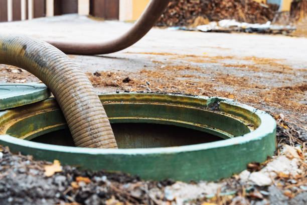
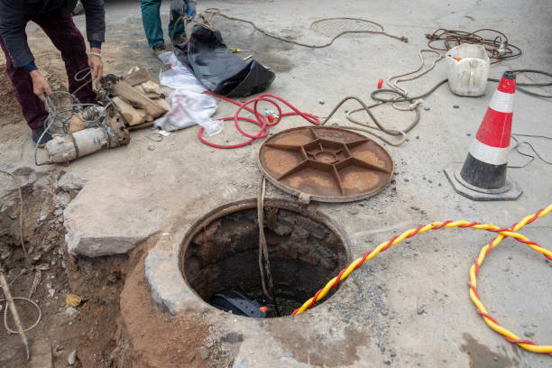
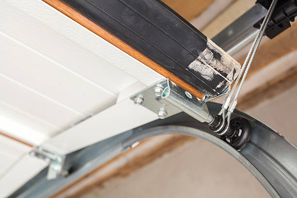

USA - Nationwide
info@asapstatewideseptic.pro
USA - Nationwide
info@asapstatewideseptic.pro

Planning to install a new septic tank? Our team specializes in efficient septic tank installation services ensuring compliance and longevity for your system.
Get expert septic tank installation services today! Ensure your system's reliability and longevity with our professional team in Usa - Nationwide to enhance your property's functionality.
Residential & commercial septic service
Quality services at affordable prices
Immediate 24/ 7 emergency services


In today's world, ensuring your home's waste management system operates efficiently is critical for a clean and healthy living environment. At septic service, we specialize in providing top-notch residential septic services . Our team of experienced professionals has the knowledge and tools to handle all aspects of septic system management, including installation, repair, maintenance, and inspection.
Investing in regular septic services not only guarantees the longevity of your system but also prevents potential health hazards associated with malfunctioning systems. From conducting thorough inspections to scheduling regular cleanings, our proactive approach helps homeowners avoid costly repairs. With our expertise in the latest technologies and techniques, you can rest assured your septic system will be in the best possible hands.
Customer satisfaction is our top priority. We pride ourselves on our transparent pricing, exceptional customer service, and commitment to eco-friendly practices. Choose septic service for your residential septic needs, and experience the peace of mind that comes with a dependable waste management system.

When your septic tank encounters problems, quick and efficient repair is essential to prevent further issues and hefty repair costs. We specialize in septic tank repair services tailored to the needs of homeowners in Usa - Nationwide. Our skilled technicians can diagnose a range of common and complex septic issues including leaks, clogs, and structural damage.
Choosing our septic tank repair services means you benefit from our commitment to use high-quality materials and proven techniques. We provide thorough inspections and reports, offering you a detailed understanding of the issues at hand. With our reliable service, you can trust that we will restore your septic system to proper function without unnecessary delays.

Is your septic tank showing signs of trouble? At septic service, we specialize in septic tank repair services to keep your system running smoothly. Our experienced technicians are trained to diagnose common septic tank issues such as leaks, blockages, and improper drainage. With a detailed inspection and assessment, we identify the root cause of the problem and offer tailored solutions that restore function quickly and effectively.
Choosing us for your septic tank repair means you are opting for professionalism and reliability. We utilize state-of-the-art tools and techniques to perform repairs promptly, minimizing disruption to your daily life. Our team is fully licensed and insured, giving you peace of mind that you are working with qualified professionals .
Additionally, our commitment to customer satisfaction shines through in our transparent pricing and excellent communication throughout the repair process. We explain what needs to be done and why, ensuring you make informed decisions about your septic system. Trust septic service for effective and reliable septic tank repair services .

The health of your septic system largely depends on regular cleaning and maintenance, and our services in Usa - Nationwide are designed to extend the lifespan of your system while preventing harmful backups. We provide comprehensive cleaning solutions that include jetting, descaling, and preventive maintenance checks to keep your system functioning optimally.
Our trained professionals use the right techniques tailored to your specific system's needs. Ensuring your septic tank is clean is not just about good practice, it’s about safeguarding your home and family’s health. With our unwavering commitment to customer satisfaction, we guarantee that your system is treated with utmost care and professionalism.

Regular septic system inspections are crucial for early detection of potential issues that can spiral into costly repairs if not addressed promptly. Our septic system inspection services in Usa - Nationwide are thorough and meticulous, employing cutting-edge technology to evaluate your system’s health.
Why choose us? Our team pays attention to every detail during inspections—including tank conditions, drain field integrity, and baffle health. This allows us to provide comprehensive reports and recommendations that are easy to understand. Safe, reliable, and efficient services are what we aim to deliver, helping to prolong the life of your septic system.

When your septic tank has reached the end of its lifespan, timely replacement is critical to preventing sewage backups and health hazards. At septic service, we offer professional septic tank replacement services in Usa - Nationwide, tailored to meet your specific needs.
Our experienced team conducts a thorough assessment of your existing system to determine the most suitable replacement options. We ensure compliance with all local regulations while selecting high-quality materials that offer durability and long-term performance. Our comprehensive installation process includes everything from excavation to final inspections. Choose septic service for your septic tank replacement needs and enjoy a reliable waste management system for years to come.

Sometimes, septic systems reach the end of their lifespan and require complete replacement. At septic service, we specialize in septic tank replacement services, ensuring a hassle-free transition to a new system. Our expert team assesses your current system’s condition and identifies the best replacement options tailored to your land and needs.
We guide you through the entire replacement process, from initial assessment and permitting to installation and post-installation check-ups. Our professionals are trained to handle the complexities of replacing a septic tank, ensuring all work is performed to industry standards and local regulations.
Choosing septic service for septic tank replacement means investing in quality. Our installations focus on high-quality materials and workmanship, ensuring longevity and reliability. We prioritize your satisfaction, ensuring that your replacement tank serves your property effectively for years to come.

If you’re experiencing septic system issues but can’t pinpoint the cause, our septic system troubleshooting services can help. Our team of experienced professionals knows how to diagnose complex problems through detailed examinations and assessments to get your system back on track.
We understand the nuances behind septic systems, which allows us to offer tailored solutions to resolve your troubles effectively. Our proactive approach ensures minimal disruption and optimal results. By choosing our troubleshooting services, you partner with a team that emphasizes transparency and communication throughout the process.

Is your septic system showing signs of malfunction? At septic service, we specialize in septic system troubleshooting, diagnosing issues that threaten your home’s sanitation. Our experienced technicians are skilled at identifying common problems such as slow drains, foul odors, and abnormally wet areas in your yard.
Through a step-by-step diagnostic process, we isolate the issue, whether it’s a tank problem, line clog, or drain field failure. We work efficiently to determine the best course of action, repairing what can be fixed and recommending replacements when necessary.
Choosing septic service means you are selecting a team that values transparency and communication. We explain every step of the troubleshooting process and discuss your options, ensuring you have a clear understanding of your septic system’s health and required interventions.

The last thing you want is a septic backup ruining your day, and our prevention and solution services are tailored to protect your home from such disasters. We employ preventative strategies, including regular inspections, proper usage education, and routine maintenance to ensure you avoid those costly messes.
Our team is dedicated to providing exceptional service, promptly addressing any potential issues before they escalate. Trust in our knowledge and expertise to keep your septic system functioning smoothly and your home free from distress.

For businesses, a properly functioning septic system is a key element of operations. At septic service, we provide specialized commercial septic services designed to meet the demands of any business, from restaurants to office buildings. Our trained professionals understand the unique challenges commercial systems face, and we offer tailored solutions that ensure reliability and compliance. Opting for our commercial septic services means minimizing downtime and ensuring that your business operates smoothly without septic-related disruptions.

Installing a septic system for a commercial property requires expertise and compliance with local regulations. At septic service, we specialize in commercial septic system installations that cater to businesses of all sizes. Our team conducts in-depth assessments of your property to design a system that meets your specific needs and adheres to local codes. With our commitment to quality and efficiency, we guarantee a seamless installation process that supports your business operations effectively.

Installing a commercial septic system is a critical investment for any business. At septic service, we specialize in commercial septic system installation that meets the specific needs of your property and industry. Our team of licensed professionals takes into account factors like soil conditions, property size, and local regulations to recommend an effective septic solution.
Our installation process is thorough and designed to minimize disruptions to your business operations. We utilize top-grade materials and advanced techniques to ensure that your new septic system is robust and compliant from the outset.
We pride ourselves on our detailed consultations, guiding you through the entire process and answering any questions you may have. With septic service, you can rely on expert guidance to ensure your commercial septic system serves your business effectively .

Regular septic tank pumping is crucial for commercial properties to maintain efficient operations. At septic service, we offer professional commercial septic tank pumping services designed for businesses across Usa - Nationwide. Our trained technicians understand the unique flow and usage patterns of commercial establishments, allowing us to create a customized pumping schedule that fits your needs.
Our advanced pumping equipment can handle the demands of high-usage properties, ensuring that waste is removed efficiently while adhering to all environmental regulations. Regular pumping not only prevents backups but also promotes the longevity of your septic system, safeguarding your business against costly repairs and disruptions.
Choosing septic service for commercial septic tank pumping means partnering with a team that values excellence and reliability. We pride ourselves on our commitment to customer service, quick response, and professional conduct, ensuring that your pumping needs are met promptly and effectively.

For businesses such as restaurants and food processing facilities, grease traps and waste removal are vital to prevent sewer backups and maintain compliance with health regulations. At septic service, we specialize in grease trap and commercial waste removal services tailored to your industry’s needs .
Our team provides routine cleaning and maintenance of grease traps to ensure they operate efficiently and adhere to local codes. Proper grease trap management prevents buildup and clogs, which can lead to costly fines and system failures. We utilize environmentally friendly methods to remove waste, guaranteeing safe disposal that complies with all regulations.
With our professional approach, you can trust septic service to handle your grease trap and waste removal needs with precision. We prioritize promptness and reliability, enabling you to focus on running your business without worrying about waste management issues.

Maintaining the integrity of your septic system is essential, especially for high-traffic establishments like restaurants and hotels. Our septic system repair services in Usa - Nationwide are specifically designed to handle the unique challenges posed by commercial properties, ensuring minimal downtime during repairs.
When you choose our team, you gain access to skilled professionals adept at identifying and resolving complex issues efficiently. We understand the critical nature of your operations, and our fast response times and quality workmanship ensure that your business runs smoothly without unhygienic interruptions.

As a restaurant or hotel owner, maintaining a functional septic system is essential to your business’s success. At septic service, we specialize in septic system repair services for the food and hospitality industries. Our trained technicians understand the unique challenges faced by commercial operations and are equipped to handle everything from minor repairs to major overhauls.
We prioritize quick response times to minimize downtime, ensuring that your guests never notice the disruptions caused by septic issues. Our team utilizes advanced diagnostic tools to pinpoint problems accurately and provides solutions that restore your system’s functionality swiftly and effectively.
Customer satisfaction is our core mission. By choosing septic service, you can rest assured that your septic system is in the hands of qualified professionals who prioritize your operational needs and compliance with industry regulations.

Navigating the complexities of septic system compliance can be daunting for business owners. Our services focus on ensuring that your commercial property meets all local health and safety regulations. We conduct thorough inspections and provide recommendations to bring your system up to standard.
We keep abreast of local codes and compliance requirements, ensuring you remain ahead of any regulations that might impact your business. Trust our expertise to help you maintain a compliant and functional septic system, safeguarding your investments.

Septic emergencies can arise unexpectedly, and quick response is crucial to minimizing impact on your business. At septic service, we provide emergency septic services for commercial properties in Usa - Nationwide, ready to tackle urgent issues efficiently.
Our skilled professionals are available around the clock, equipped to handle emergencies like backups, leaks, and system failures. We pride ourselves on our rapid response times and effective solutions, protecting your property and operations. Trust septic service to ensure your septic system is back up and running in no time.

Septic emergencies can occur at any time and pose significant risks to your business. At septic service, we offer emergency septic services specifically designed for commercial properties. Our 24/7 service ensures that any unexpected issues are addressed promptly, minimizing the impact on your operations.
Our skilled technicians are equipped with the necessary tools and expertise to handle emergencies efficiently, whether it's a backup, blockage, or failure of a critical component. We prioritize rapid response times, restoring functionality to your system quickly and effectively.
By choosing septic service for emergency services, you are ensured peace of mind knowing that help is just a phone call away. We are committed to not only resolving the immediate issue but also helping you implement solutions that prevent future emergencies.

Effective sewage treatment is essential for maintaining a safe and clean environment in any business. At septic service, we offer tailored sewage treatment systems for businesses designed to meet the specific requirements of various industries.
Our engineered systems comply with all regulations while offering advanced treatment technologies. With a focus on efficiency and environmental responsibility, we educate businesses on best practices for managing their sewage effectively. Choose septic service for innovative sewage treatment solutions that prioritize your business needs.

For unique needs that fall outside the standard scope of septic services, we provide specialized septic services . Whether you require specific assessments, unique installations, or targeted repair solutions, our specialized team is ready to assist with expert knowledge and experience.
Choosing us for specialized septic services means you get access to a wealth of expertise aimed at addressing your specific challenges effectively and efficiently. We leverage our knowledge of diverse systems to offer personalized solutions that ensure your satisfaction.

Knowing the exact location of your septic tank is crucial for maintenance and repairs. At septic service, we provide professional septic tank location services utilizing advanced technology to pinpoint your tank’s location accurately.
Our trained technicians understand the importance of this service and work diligently to avoid disrupting your property. With our detailed reports, you can easily schedule maintenance and repairs confidently. Trust septic service to help you find your septic tank quickly and efficiently.

Finding the precise location of your septic tank is essential for effective maintenance and repairs. At septic service, we offer expert septic tank location services tailored to the specific needs of property owners . Our state-of-the-art techniques and equipment allow us to pinpoint tank locations accurately, even when they are hidden or buried under landscaping.
Knowing the exact location of your septic tank aids in regular maintenance and helps prevent unnecessary damages. We provide clear documentation of our findings, helping you manage and care for your septic system more effectively.
By choosing septic service, you are partnering with a knowledgeable team that prioritizes your satisfaction and peace of mind. We ensure the process is quick, efficient, and minimally disruptive to your property.

Rural properties face unique septic challenges, especially when it comes to pumping. Our septic system pumping services for rural properties cater to homeowners who require specialized attention to their systems, given the often challenging access to their tanks.
Our trained professionals understand the specific requirements of rural septic systems and are equipped with the right tools and knowledge to pump your system effectively. Choosing us helps ensure that your septic system remains reliable, functional, and compliant.

Aerobic septic systems can offer greater efficiency for properties with high water usage. Our installation and repair services in Usa - Nationwide focus on ensuring these systems operate at peak performance, allowing for effective treatment of wastewater.
When you choose us for aerobic septic system installation or repair, you gain access to skilled technicians trained in advanced septic technologies, committed to delivering exceptional service. Let us help you achieve a sustainable solution tailored to your property’s specific needs.
For commercial kitchens and food service businesses, grease traps are essential for preventing clogs and backups. At septic service, we offer professional grease trap cleaning and maintenance to ensure compliance and efficiency. Our team is trained in the best practices for grease trap servicing, providing thorough cleaning that minimizes odors and prolongs the life of your system. By choosing our services, you are protecting your business from plumbing issues and maintaining a sanitary environment for your operations.
USA - Nationwide septic service Pros
(877) 848-1711
info@asapstatewideseptic.pro
09.00 AM - 09.00 PM
09.00 AM - 12.00 PM